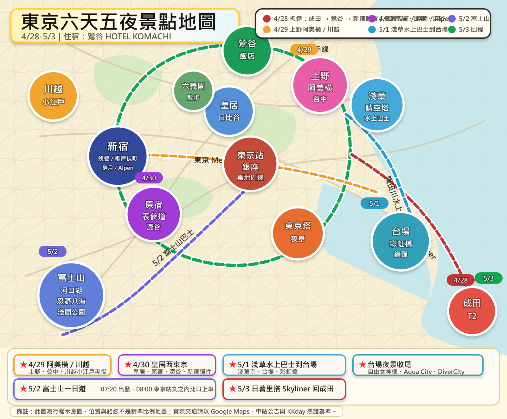

航班資料
建議桃園機場 08:10-08:40 抵達。抵達成田後抓 60-90 分鐘入境、領行李、買票。
建議 11:10-11:30 抵達成田 T2，時間比較從容。

住宿資料
台中到桃園機場客運
座位 11：票號 126041400900561000077921。
座位 9：票號 126041400900561000077829。
狀態：未取票。
上車站：台中車站。
下車站：一航站。
乘車時間：2026/4/28 06:01。
訂單編號：100260414162657817。
訂票代碼：B4220294T。
取票數字：220294。
已完成付款，需至統聯臨櫃取票，不適用便利商店取票。
上車站：朝馬站（朝富路）。
下車站：一航站。
乘車時間：2026/4/28 06:06。
車次：1623（A）朝馬、桃園機場。
座位：自由選位。
訂票代碼：BB19820924。
取票數字：092471。
日本交通 IC 卡：Welcome Suica
這趟 4/28-5/3 共 6 天，建議抵達成田後辦 Welcome Suica。它是給短期旅客使用的 IC 卡，可搭 JR、東京 Metro、都營地鐵、巴士，也可在部分便利商店購物。
效期：購買日起 28 天。押金：免押金。
4/28 抵達後：成田機場 T2 入境後可直接購買；接著搭 Skyliner 到日暮里站，再轉 JR 山手線一站到鶯谷站。
儲值：可用現金儲值，最高餘額 20,000 日圓；也可在 7-Eleven 的 Seven Bank ATM 儲值。餘額不能退，最後一天不要儲太多。
建議先儲：3,000-5,000 日圓。地鐵、JR、便利商店小額付款都很實用；購買時拿到的 Reference Paper 也建議留著。
JR East Welcome Suica 官方資訊這張票是 JR 東日本的東京 23 區內 1 日券，適合當天會密集搭 JR 山手線或其他 JR 路線在市區內移動的人。
票價：大人 870 日圓。效期：1 天。
可搭範圍：東京 23 區內的 JR 普通列車（含快速）普通車廂非指定座席，可不限次數搭乘。
注意：這張票不包含東京 Metro、都營地鐵、京成電鐵，也不包含 Skyliner。你這份行程如果當天主要跑 JR 線，例如 鶯谷站、上野站、新宿站、澀谷站這種移動很多，才比較值得考慮；若同一天會混搭地鐵，通常還是刷 Welcome Suica 比較直覺。
JR 東日本東京都市地區周遊券官方資訊 補充參考：小氣少年的 Tokunai Pass 圖解搭東京 Metro 或都營地鐵前，可以先看路線顏色與站號。手機若 PDF 載入較慢，建議先在飯店 Wi-Fi 下打開一次。
Tokyo Metro 官方地鐵圖 PDF交通票券與提醒
Skyliner 最適合帶行李往返日暮里站，再轉 JR 山手線一站到鶯谷站；速度快且座位固定。若想省錢，京成本線特急可用時間換預算。
東京 Metro、都營地鐵、JR 山手線都會用到。只買 Subway Ticket 時，JR 山手線不含在內，進出鶯谷站與日暮里站仍需刷 IC 卡。
4/28 抵達先進飯店。5/3 回程不要排遠點，從鶯谷站出發到日暮里站轉 Skyliner 去成田的路線很順，留足機場時間最重要。
JR 範圍圖

查詢依據
交通時間會因當日班次與施工調整，出發前請再用 Google Maps、Japan Transit Planner 或車站公告確認。
參考：京成 Skyliner 路線與時刻資訊、Tokyo Subway Ticket 官方資訊、Tokyo Metro 官方地鐵圖 PDF、JR East Welcome Suica 官方資訊、HOTEL KOMACHI Higashi Nippori 周邊車站資訊、KKday 富士山一日遊行程頁、富士吉田官方本町通資訊、好運日本行台場景點資訊、GO TOKYO 阿美橫資訊、UNIQLO Ginza 資訊、GU Ginza 資訊、Don Quijote 御徒町店資訊。
行程景點地圖
